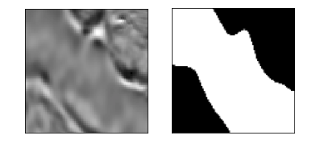

tgs-salt-identification-challenge¶
コンペ概要¶
本コンペティション開催の背景
今回のコンペのホストであるTGS社は、石油やガスなどの地下資源探査に必要な
地球科学データの収集・解析を行う企業です。
地下資源探査において塩の固まりが埋まっている領域を採掘機で採掘することは危険であり、
事前にどの領域に塩が埋まっているか把握しておく必要があります。
そのため、TGS社は地震探査法と呼ばれる地下構造の性質を捉える手法で地質画像を取得し、
その画像から専門家がどこが塩領域なのかを特定していました。
しかし、同一の地質画像に対して専門家ごとに領域判定が異なることがあるため、
専門家の判定は地下資源の採掘に潜在的な危険を及ぼします。
そこで、TGS社は地質画像から塩領域を特定する画像セグメンテーション技術が必要であると考え、
今回Kaggleにおいて本コンペティションを開催。
データの種類とタスク¶
地質画像から塩の領域のセグメンテーションを行う
このコンペで使用するデータは下図のような画像になります。
左が地震探査法で取得した地質画像、右がどの領域が塩なのかを表すmask画像となります。
訓練画像4,000枚、テスト画像18,000枚が提供され、
参加者はこれらの画像を用いて予測モデルを構築していきます。

評価方法¶
セマンティックセグメンテーション